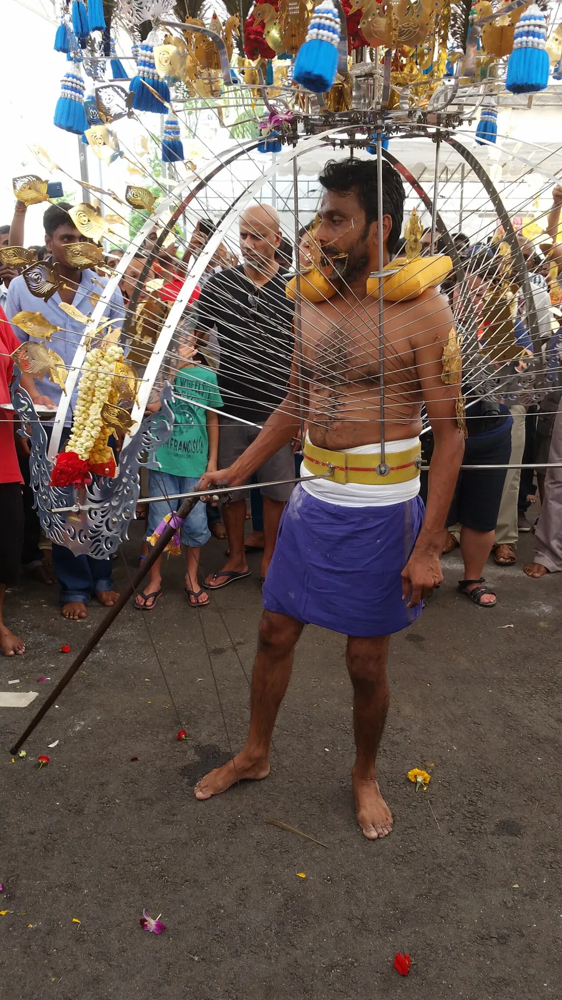
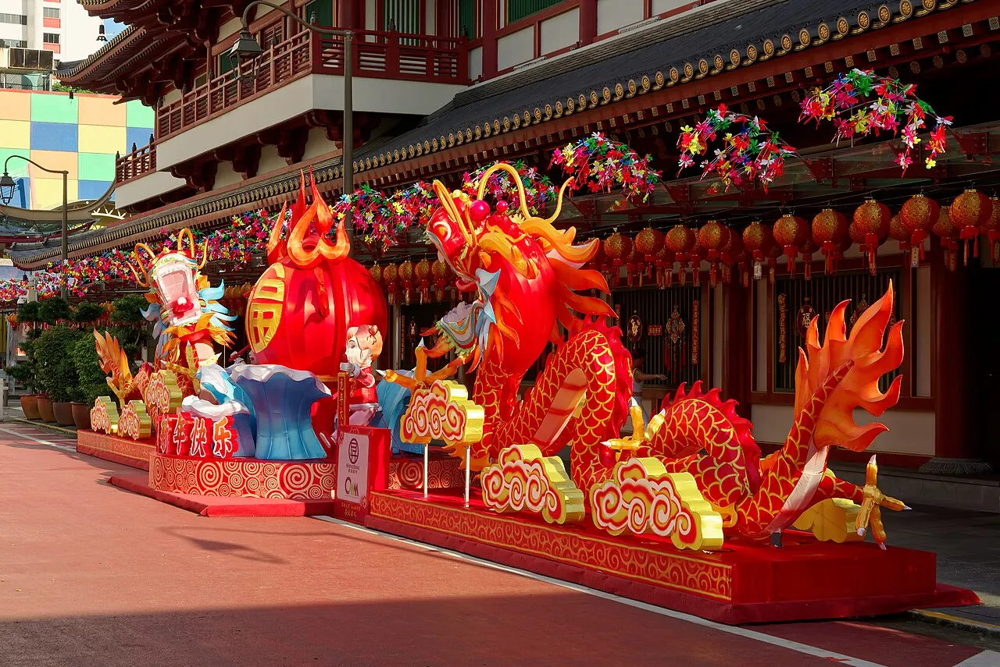
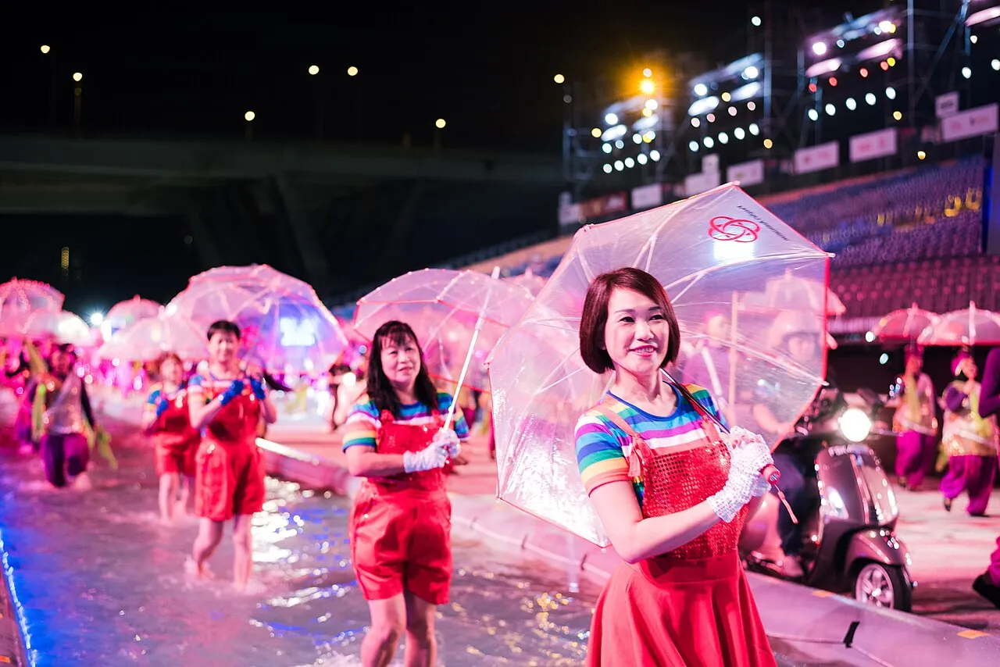
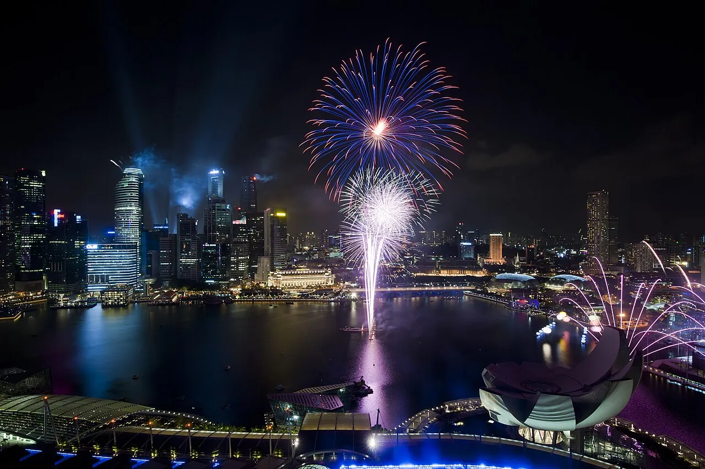
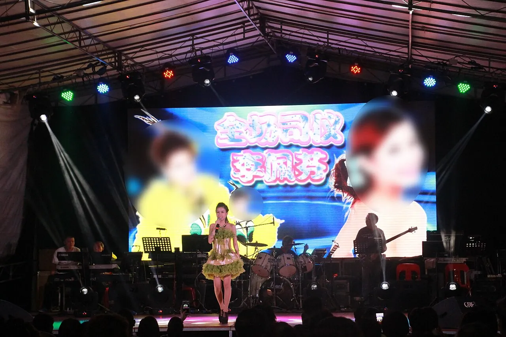
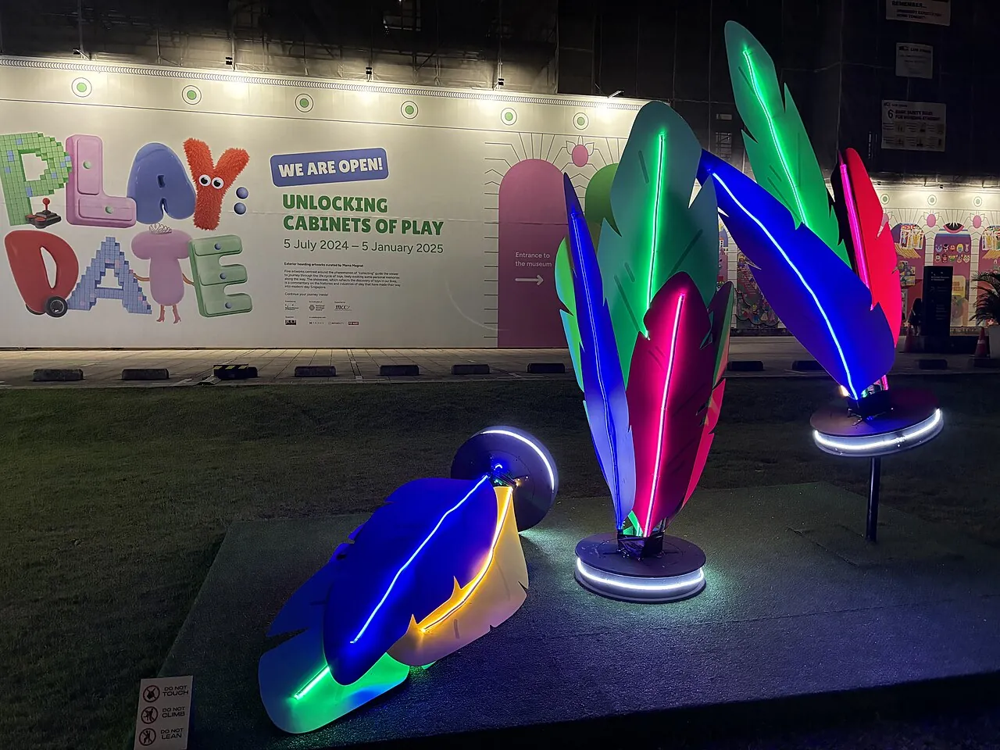

FEBFebruarypeak month · 3 festivals



-
1 Feb (procession from 31 Jan night) · Serangoon Rd → Tank Rd
Hindu vow rite — kavadi-bearing and skin-piercing through the streets. The rawest spectacle in town; not a public holiday. [4][11]
-
Chinese New Yeartouristy
17–18 Feb · Chinatown, River Hongbao (Year of the Horse)
The biggest Chinese festival — Chinatown light-up, lion dances, fairground. [2]
-
27–28 Feb · F1 Pit Building
Asia's largest street parade — multicultural floats and mass performance, 8–9:30pm. [5]
APRAprilno marquee festival
A clear page.
No dated spectacle — and one of the driest, least-crowded windows. Pure any-day culture: museums, Esplanade's free daily stages and craft workshops carry the month (see Open any day below).
JUNJuneno marquee festival
A clear page.
Equator heat, no dated festival — a museum-and-workshop month.
⚠ Selected teamLab Future World areas at the ArtScience Museum close 15 Jun–28 Aug 2026 for enhancements. [25]
JULJulyno marquee festival
A clear page.
The lull before August's stack. Watch the NEA haze forecast (regional fires possible Jun–Oct) before booking outdoor-heavy days — and lean into indoor culture.
AUGAugustpeak month · 3 festivals



-
9 Aug · National Stadium
Independence Day — back at the National Stadium for the first time since 2016, theme Majulah Singapura, Go Beyond! Free fireworks views citywide. [16][17]
Seated tickets are balloted via Singpass — citizens & PR only. Visitors watch the fireworks from Marina Bay. [17]
-
Hungry Ghost Festivaloffbeat
13 Aug–11 Sep (peak 27 Aug) · Geylang, heartland estates
The 7th lunar month — loud Hokkien getai concerts, street opera and joss offerings staged for the spirits. Geylang hosts the biggest getai; the most authentic culture a visitor can stumble into. [13][14]
-
Singapore Night Festivaltouristy
late Aug–early Sep · Bras Basah.Bugis
Free night-time light installations across the arts district — 16 nights of projections and street performance. [19]
DECDecemberno marquee festival
A clear page.
Wet monsoon, no dated festival — close the year on any-day culture and the weird museums.
⚠ Haw Par Villa's wider park is partially closed from 8 Dec 2025, but Hell's Museum (the Ten Courts of Hell) stays open. [34]